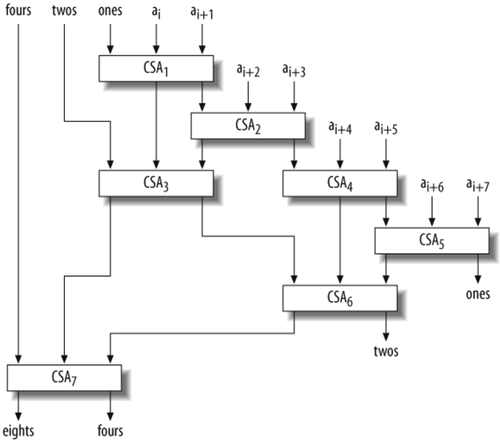

10.6. Counting the 1-Bits in an Array
The simplest way to count the number of 1-bits in an array (vector) of fullwords, in the absence of the population count instruction, is to use a procedure such as that of Example 10-1 on each word of the array, and simply add the results. We call this the naïve method. Ignoring loop control, the generation of constants, and loads from the array, it takes 16 instructions per word: 15 for the code of Example 10-1, plus 1 for the addition. We assume the procedure is expanded inline, the masks are loaded outside of the loop, and the machine has a sufficient number of registers to hold all the quantities used in the calculation.
Another way is to use the first two executable lines of Example 10-1 on groups of three words in the array, adding the three partial results. Because each partial result has a maximum value of 4 in each 4-bit field, the sum of the three has a maximum value of 12 in each 4-bit field, so no overflow occurs. This idea can be applied to the 8-and 16-bit fields. Coding and compiling this method indicates that it gives about a 20 percent reduction over the naíve method in total number of instructions executed on a basic RISC. Much of the savings is canceled by the additional housekeeping instructions required. We will not dwell on this method because there is a much better way to do it.
The better way seems to have been invented by Robert Harley and David Seal in about 1996.[||]It is based on a circuit called a carry-save adder (CSA) or 3:2 compressor. A CSA is simply a sequence of independent full adders[#] and is often used in binary multiplier circuits.
[||] David Seal, Newsgroup comp.arch.arithmetic, May 13, 1997. Robert Harley was the first person known to this writer to apply the CSA to this problem, and David Seal showed a particularly good way to use it for counting the bits in a large array (as illustrated in Figure 10-2 and Example 10-5), and also for an array of size 7 (similar to the plan in Figure 10-3).
[#] A full adder is a circuit with three 1-bit inputs (the bits to be added) and two 1-bit outputs (the sum and carry). See John L. Hennessy and David A. Patterson, Computer Architecture: A Quantitative Approach. Morgan Kaufmann, 1990.
In Boolean algebra notation (juxtaposition denotes and, + denotes or, and  denotes exclusive or), the logic for each full adder is:
denotes exclusive or), the logic for each full adder is:
h ab + ac + bc = ab + (a + b)c = ab + (a
where a, b, and c are the 1-bit inputs, l is the low-bit output (sum), and h is the high-bit output (carry). Changing a + b on the first line to a b is justified because when a and b are both 1, the term ab makes the value of the whole expression 1. By first assigning a b to a temporary, the full adder logic can be evaluated in five logical instructions, each operating on 32 bits in parallel (on a 32-bit machine). We will refer to these five instructions as CSA(h, l, a, b, c). This is a "macro," with h and l being outputs.
One way to use the CSA operation is to process elements of the array A in groups of three, reducing each group of three words to two and applying the population count operation to these two words. In the loop, these two population counts are summed. After executing the loop, the total population count of the array is twice the accumulated population count of the CSA's high-bit outputs plus the accumulated population count of the low-bit outputs.
The following sequence illustrates the process for a 16-bit word:
a = 0110 1001 1110 0101 9 b = 1000 1000 0100 0111 6 c = 1100 1010 0011 0101 8 ------------------------- l = 0010 1011 1001 0111 9 h = 1100 1000 0110 0101 7*2 = 14
Observe that in each column, the (h, l) pair, written in that order, is a two-bit binary number whose value is the number of 1-bits in a, b, and c, in the column. Thus each 1-bit in h represents two 1-bits in a, b, and c, and each 1-bit in l represents one 1-bit in a, b, and c. Therefore the total population (shown at the right) is twice the number of 1-bits in h plus the number of 1-bits in l, which totals to 23 in the illustration.
Let nc be the number of instructions required for the CSA steps, and np be the number of instructions required to do the population count of one word. On a typical RISC machine, nc = 5 and np = 15. Ignoring loads from the array and loop control (the code for which may vary quite a bit from one machine to another), the loop discussed previously takes (nc + 2np + 2) / 3  12.33 instructions per word of the array (the "+ 2" is for the two additions in the loop). This contrasts with the 16 instructions per word required by the naïve method.
12.33 instructions per word of the array (the "+ 2" is for the two additions in the loop). This contrasts with the 16 instructions per word required by the naïve method.
There is another way to use the CSA operation that results in a more efficient and slightly more compact program. This is shown in Example 10-4. It takes (nc + np + 1) / 2 = 10.5 instructions per word (ignoring loop control and loads).
Example 10-4. Array population count, processing elements in groups of two
When Example 10-4 is compiled, the CSA operation expands into:
u = ones ^ A[i]; v = A[i+1]; twos = (ones & A[i]) | (u & v); ones = u ^ v;
The code relies on the compiler to omit subsequent loads of a quantity that has already been loaded (a process known as commoning).
There are ways to use the CSA operation to further reduce the number of instructions required to compute the population count of an array. They are most easily understood by means of a circuit diagram. For example, Figure 10-2 illustrates a way to code a loop that takes array elements eight at a time and compresses them into four quantities, labeled eights, fours, twos, and ones. The fours, twos, and ones are fed back into the CSAs on the next loop iteration, the 1-bits in eights are counted by an execution of the word-level population count function, and this count is accumulated. When the entire array has been processed, the total population count is:
8 x pop(eights) + 4 x pop(fours) + 2 x pop(twos) + pop(ones)
The code is shown in Example 10-5, which uses the CSA macro defined in Example 10-4. The numbering of the CSA blocks in Figure 10-2 corresponds to the order of the CSA macro calls in Example 10-5. The execution time of the loop, exclusive of array loads and loop control, is (7nc + np + 1) / 8 = 6.375 instructions per word of the array.
Example 10-5. Array population count, processing elements in groups of eight
The CSAs may be connected in many arrangements other than that shown in Figure 10-2. For example, increased instruction-level parallelism might result from feeding the first three array elements into one CSA, and the next three into a second CSA, which allows the instructions of these two CSAs to execute in parallel. One might also be able to permute the three input operands of the CSA macros for increased parallelism. With the plan shown in Figure 10-2, one can easily see how to use only the first three CSAs to construct a program that processes array elements in groups of four, and also how to expand it to construct programs that process array elements in groups of 16 or more. The plan shown also spreads out the loads somewhat, which is advantageous for a machine that has a relatively low limit on the number of loads that can be outstanding at any one time.
Figure 10-2. A circuit for the array population count
Table 10-1 summarizes the number of instructions executed by generalizations of the plan of Figure 10-2 for various group sizes. The values in the middle two columns ignore loads and loop control. The third column gives the total loop instruction execution count per word of the input array, produced by a compiler for a basic RISC machine that does not have indexed loads.
It is a pleasant surprise that in the limit, the number of computational instructions required to compute the population count of n words is reduced from the naïve method's 16n to the CSA method's 5n, where the 5 is the number of instructions required to implement one CSA circuit.
For small arrays, there are better plans than that of Figure 10-2. For example, for an array of seven words, the plan of Figure 10-3 is quite efficient.[**]It executes in 4nc +3np +4=69 instructions, or 9.86 instructions per word. Similar plans exist that apply to arrays of size 2k–1 words, for any positive integer k. The plan for 15 words executes in 11nc +4np +6= 121 instructions, or 8.07 instructions per word.
[**] Seal, op. cit.